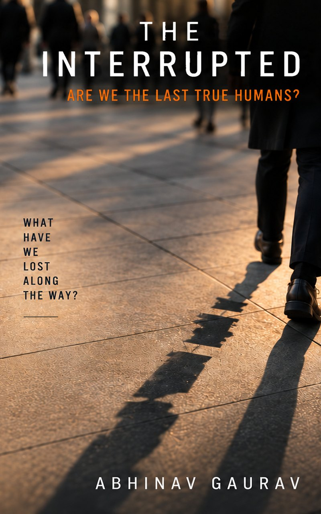

Out now
The Interrupted
Are We The Last True Humans?
A notification arrives and your jaw tightens. You call it stress. Your nervous system calls it Tuesday. This book explains why you are tired despite eight hours of sleep, and gives you AWARE, a five-step framework you can actually use.
Available in paperback, hardcover and Kindle.

The idea
The body keeps the file open
Something happens to your body before you have decided how to feel about it. A headline scrolls past and your shoulders climb towards your ears. A message arrives and the jaw tightens.
Modern life delivers its threats in pieces, and rarely gives the body an ending. The body braces, waits for closure, and stays braced. The Interrupted follows that single loop through attention, parenting, work, compulsion, algorithms and grief, and ends with a practice you can use on an ordinary Monday.
In the book’s words
Attention is not a trait. It is a habitat.
The mind understands distance. The nervous system understands cues.
We have ergonomics for chairs and keyboards. Yet, no one is building one for the nervous system.
Inside
What you will find
Habitat, not wiring
Why ADHD-like symptoms in both children and adults might be about habitat, not brain wiring.
The mechanics of “just one more”
The real mechanics behind loot boxes, fantasy sports apps and dating apps, and why the brain cannot tell a jackpot from a person.
When a system decides you are not worth hiring
Why that rejection costs the body more than it costs the bank balance.
The ambush nobody warned you about
Grief in the age of birthday notifications and deadbots.
The practice
AWARE: five steps, built from clinical work
Acknowledge. Witness. Accept what is true. Recognise the signal. Engage from here.
A practical framework for the days when you cannot fix the system but still have to get through them. It is not a clinical treatment, and the book does not present it as one.
The author
Abhinav Gaurav
Abhinav Gaurav is a cyberpsychologist. He studies what screens, notifications and algorithms do to attention, identity and the body. He spent his career as a senior leader in banking, technology and consulting, so he knows how decisions about technology actually get made inside organisations.
He is the author of Pixelated Souls and The Interrupted, and the founder of Antara Wellness, an app for psychological and psychosomatic wellbeing.

Get the book
The Interrupted: Are We The Last True Humans?
Paperback, hardcover and Kindle. For speaking, media and press enquiries, write to hello@antara-innovations.com.